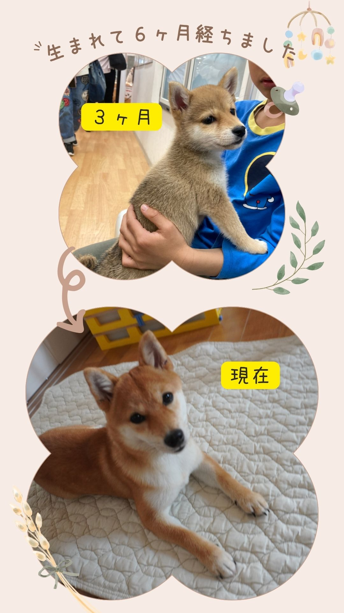
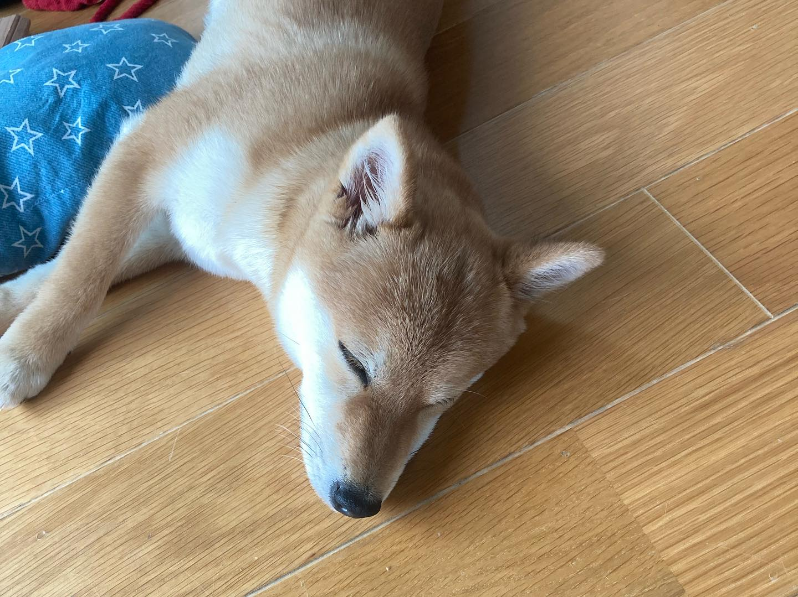
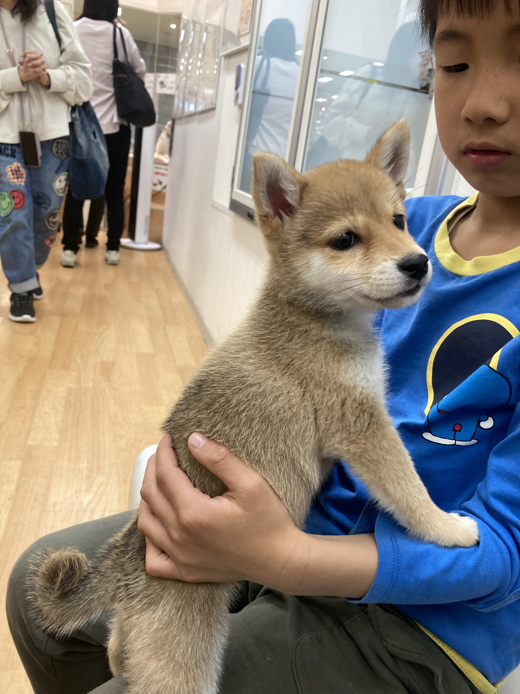

初めて泳ぎました
今日は夏休みに入った子供達とるんちゃんを連れて”ひびき海の公園”の海水浴場に行きました🏖
海には遊びがいっぱいで、るんちゃんも🐕
泳いだり
砂浜を走ったり
掘ったり
捕まえたり
初めてのものに興味津々で、とっても楽しそうでした♫
最後は疲れて日陰で休憩⛱
また行こうね〜！!
 Instagramで投稿を見る👆
Instagramで投稿を見る👆

2025年4月11日に家族の一員とな愛犬、豆柴るんの日常や成長を綴るブログです。家族との思い出やイベント、お気に入りのお散歩コースなどを紹介しています。
るんちゃんの成長を一緒に楽しんでいただければ嬉しいです！
今日は夏休みに入った子供達とるんちゃんを連れて”ひびき海の公園”の海水浴場に行きました🏖
海には遊びがいっぱいで、るんちゃんも🐕
泳いだり
砂浜を走ったり
掘ったり
捕まえたり
初めてのものに興味津々で、とっても楽しそうでした♫
最後は疲れて日陰で休憩⛱
また行こうね〜！!
Instagramで投稿を見る👆
会場に行き着く前に始まり、近くの農道で花火を鑑賞🎆
最初は始めて見る花火にちょっと怖がってたけど、だんだん慣れてきたるんちゃん
帰りの車内は8歳👦と6ヶ月🐕爆睡💤
 Instagramで投稿を見る👆
Instagramで投稿を見る👆
昨日の七夕で生後6ヶ月になりました🐕🎉
元気いっぱいで病気や怪我もなく成長してくれたるんちゃん✨
いつもるんるん♪好奇心いっぱいの人懐っこさ満載でみんなを笑顔にしてくれてありがとう💛
 Instagramで投稿を見る👆
散歩の後、動物病院で３回目の狂犬病ワクチン接種と健康診断へ🏥
飼い主の私の方が初めて見る犬のワクチン接種に緊張😵
一方るんちゃんは病院ではもらった餌を食べながら、
大人しく検診やワクチンを終えて
病院の先生からもお利口とたくさん褒めてもらい終始ご機嫌🐕
家に帰ったらさすがに疲れたようですぐに爆睡💤
よく頑張ったね〜今日は本当にお疲れ様🐕
 Instagramで投稿を見る👆
前々から柴犬を飼いたいと言っていた娘。
直方イオンにあるペッツファーストさんに以前から相談していた所、豆柴が入りました！という連絡が来たので、娘が習い事の間に息子と二人で見学させてもらいました🐕
豆柴は数が少なく滅多には入らないけど、福津店にいた時にお腹を壊し、少し成長した生後3ヶ月で直方の方にやって来た模様。
初めて会ったるんちゃんの印象は、とにかく人懐っこく小さくて可愛い♡
これは運命の出会いだと一気に心惹かれ、その場で夫に電話して、事情を説明して飼ってもいいかと聞いたけど夫はもちろん判断できず・・・
この後他の人の見学も入っていたので、これを逃すともうこの子とは会えなくなる！
そう思ったら、夫も娘も会ったら絶対賛成する！と直感を信じて独断で契約してしまいました（笑）
後で仕事が終わり夫もペットショップに来ると、やっぱりメロメロに🐕💗
そして無事るんちゃんは家に到着
どうせなら一番柴犬を飼いたがっていた娘にはサプライズにしよう！と3人で計画し😏
家に帰って、習い事が終わりお風呂から上がった娘に『プレゼントがあるよ』とだけ伝えて、娘が箱を開けてみると・・・
 Instagramで投稿を見る👆